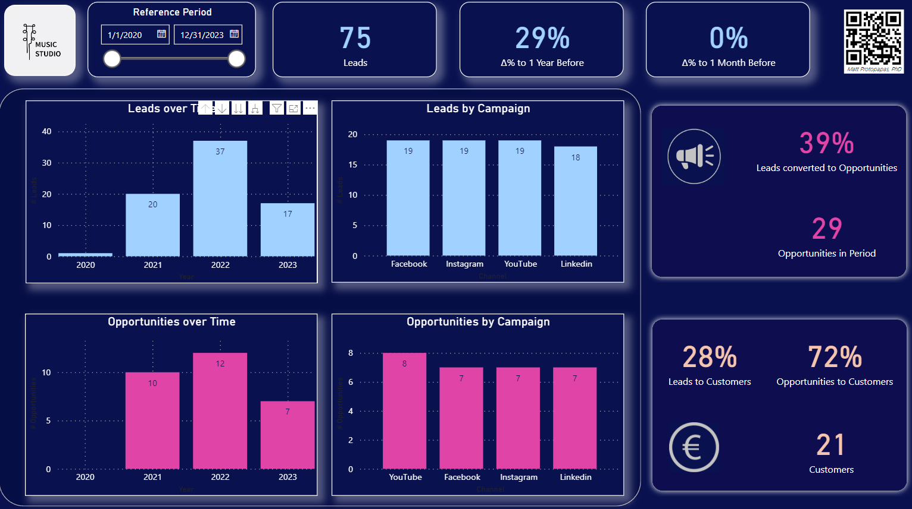
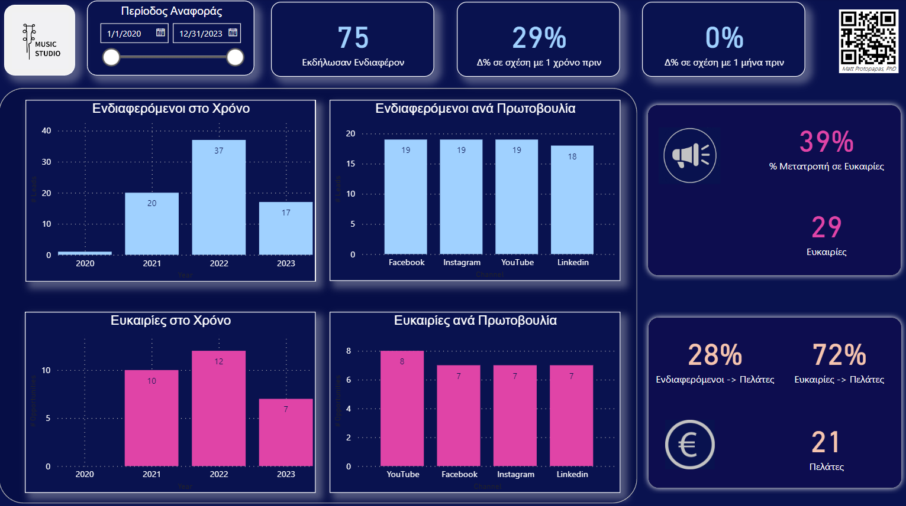

Reports & Analytics Demos
Various reports and other analytics resources I have created as demos, and instructions on how they can be used to promote data driven decision making, and how to replace the underlying data with your own data, using the provided Excel templates. I can also help you tailor these demos to your business processes and automatically populate them with data from your systems. Contact me if you have any questions or if you'd like to discuss about custom analytics solutions.Marketing Reports Demo
This report demo helps us understand the effectivenes of promotional activities across various channels/campaigns. We can understand how leads are converted to opportunities and then to customers, over time and across the different channels (or promotional campaigns). This help us understand which channels have been more effective, and how their effectiveness changes across time. So we can make decisions on budget and resources allocation.
Try the report:
| Download the English version of the Power BI report. | View instructions on how to use it |
|  |
| Κατεβάστε την ελληνική έκδοση της αναφοράς. | Δείτε οδηγίες για το πώς να τη χρησιμοποιήσετε. |
|  |
| Download input excel file. | The data used in this report (a simple excel file) can be downloaded and the data inside replaced with you own, so you can understand your sales funnel better. Just make sure you keep the structure of the excel file (tab names, column names, data types, etc.) the same, and that you save both the excel and the Power BI files in a folder called C:/demos. Contact me if you have questions. |